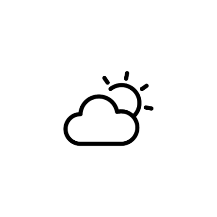

Data
Site: 10 acres | 4.04686 hectares
Total Floor Area:88,562 square feet|8,228 square meters
Address: 348 3 St W, Cardston, AB T0K 0K0, Canada.
Elevation: 3,780.2 feet | 1,152.2 meters
Dedication: July 27, 1913 by President Joseph F. Smith.
Weather

Temperature: 43°F (6°C).
Conditions: Sunny
Wind: 11 mph12 km/h
Wind Chill: